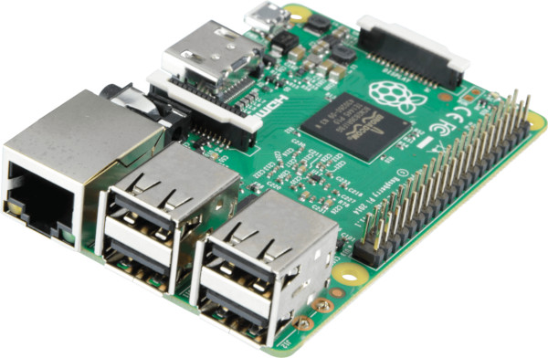
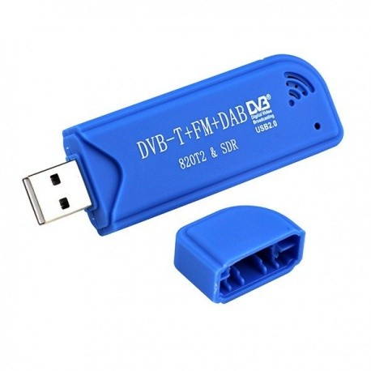

Balise RTL-SDR
Matériel nécessaire
- clé RTL-SDR
- antenne
- boîtier
- Raspberry Pi (v.)
- amplificateur audio et haut-parleur (voir la section Audio)
Assemblage



Audio
Selon la version de Raspberry Pi utilisée, il y a différentes possiblités pour la sortie son.
Raspberry Pi Zero, 3B, 4B: module IQaudio Zero : voir la recette IQaudio ZeroRaspberry Pi 2 / 3 / 4: amplificateur audio et haut-parleur intégré (enceinte de bureau, enceinte blutooth)
Programme
Les sources sont ici : github.com/balises-ouistici/rtlsdr-nfs32002
- Télécharger les scripts Python sur votre Raspberry
- Vérifier que vous avez toutes les bibliothèques nécessaires
- Activer le script au démarrage du Raspberry (voir la recette)
- Vous pouvez désactiver l'affichage "Desktop"